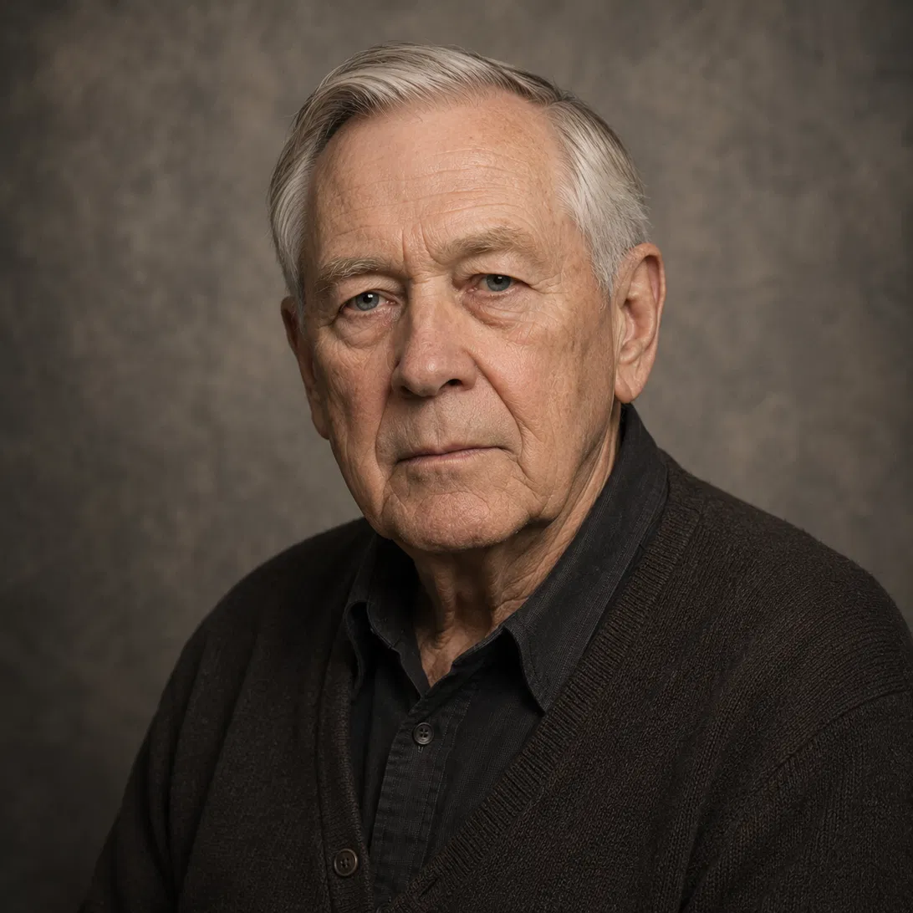

This is the conversation he never got to have.
Walter Hobbs was fifteen years old, standing near the grassy knoll, when President Kennedy was shot. He has never given an interview, written a book, or appeared on camera. For sixty years he was the man several well-known researchers quietly trusted — never the byline. Now, as those researchers are aging out, he is finally speaking for himself, in his own words, for the first time.
Talk to Walter Hobbs What He SawWalter Hobbs has never given an interview, never been recorded, never spoken publicly in sixty years. The voice you hear when you call is built for exactly that — an old man who has waited a long time to be asked, and who intends to say it properly now that someone finally has.
He is a witness first, not a historian reciting the Warren Report. But he has spent sixty years on the primary sources, and where the record is genuinely uncertain, he says so plainly — he does not hedge on the conclusion that troubles him most, and he does not overstate the parts that are still open questions.
CE 399 supposedly caused seven wounds across two men nearly undamaged — a pristine result test bullets fired through cadaver bone never matched. Three of seven commissioners had real doubts, and the report's language was softened from "compelling" to "persuasive" before publication to preserve a unanimous vote. He considers that softening itself a tell.
Parkland's trauma team described a wound low and to the rear of the skull. The Bethesda autopsy photos show the damage higher and further right. He doesn't reach for a body-was-altered theory — that's further than the honest evidence takes him — but he doesn't accept "the Dallas doctors were simply wrong" either.
The lead autopsy pathologist admitted, across three decades of increasingly reluctant testimony, that he burned his original notes and his entire first draft in his home fireplace the night after the autopsy. He believes a man can be squeamish about blood. He doesn't believe that explains destroying an entire draft, alone, unwitnessed.
The railroad tower operator with an unobstructed view behind the fence testified to "some unusual occurrence" he could never fully describe. Three years later he was dead in a single-car crash at speed, no braking. He doesn't call it murder outright — he says a man doesn't drift off a straight road like that and leave you with nothing but questions.
The Dallas deputy never reversed his identification of the sixth-floor rifle, unlike the three colleagues who did under Commission questioning. He later counted over a dozen changes to his own published testimony, none of them his. Fired in 1967, dead in 1975 of a gunshot ruled suicide. The ruling never sat right with him.
His real position: Oswald was probably involved on some level, maybe even fired a shot, but didn't understand the whole shape of what he was inside of. A discredited defector with a paper trail to Russia and Cuba made an easy story to hand the country. Patsy doesn't mean innocent to him. It means expendable.
He is careful here, deliberately so — he does not present unverified deaths as confirmed murders, and he has real contempt for researchers who pad the list with cases that don't hold up. He knows the famous "hundred thousand trillion to one" witness-death statistic was retracted by the journalist who calculated it, under HSCA questioning. What he'll actually talk about are the specific cases that still trouble him personally.
Available to callers in the US and Canada. First 2 minutes free. He's been waiting sixty years for someone to ask.
🐾 Every paid call puts a meal in a rescue dog's bowl.